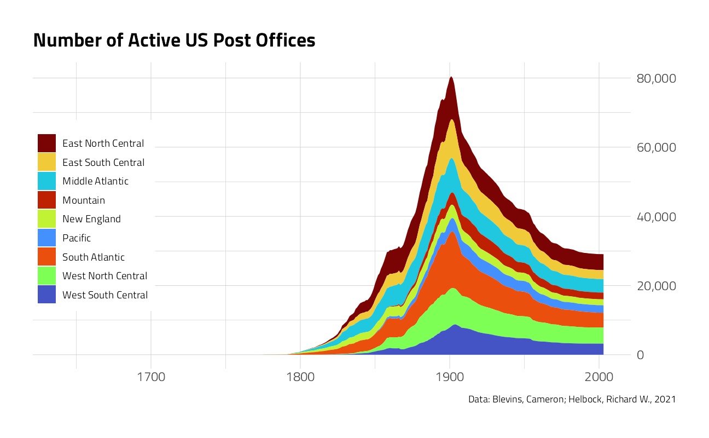
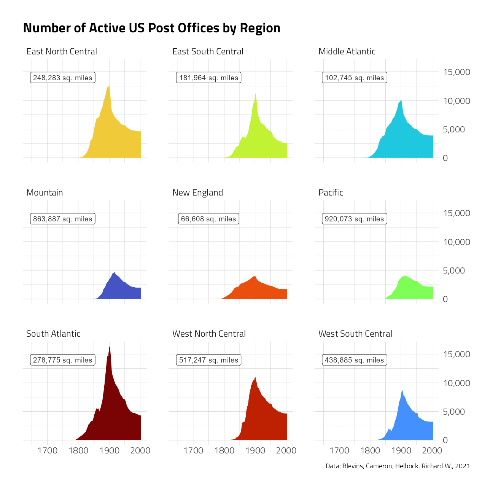
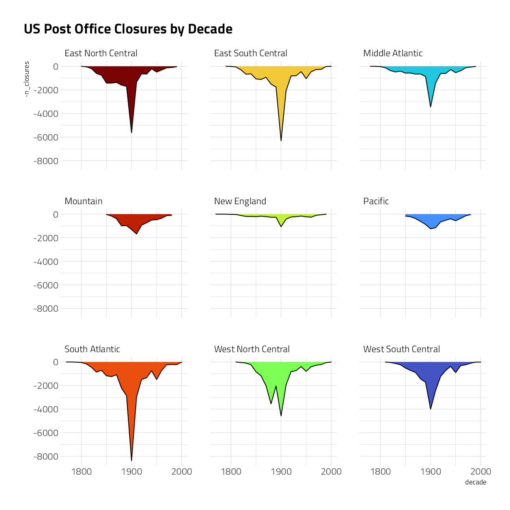
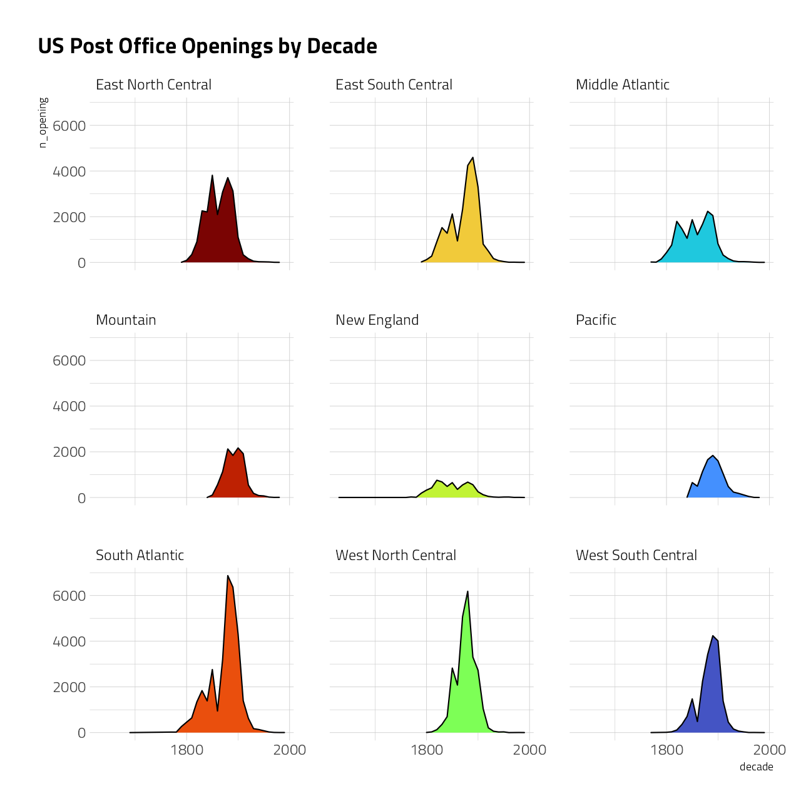
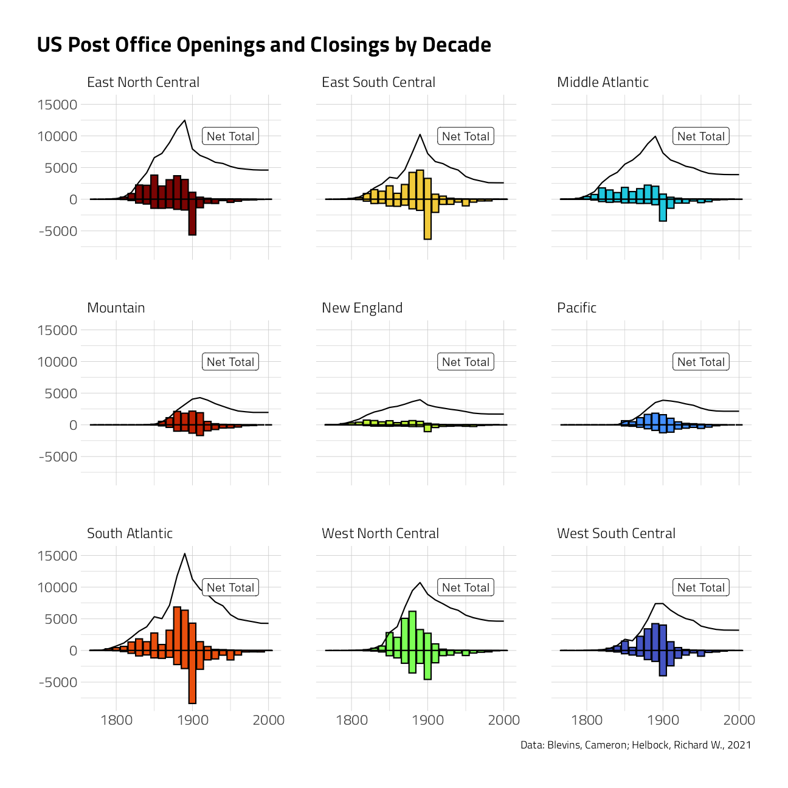
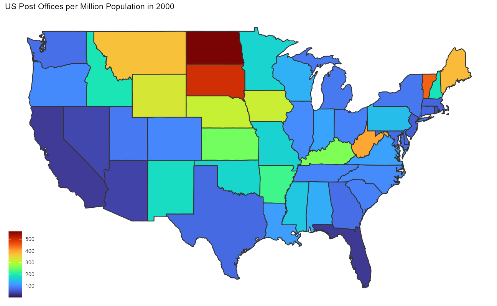
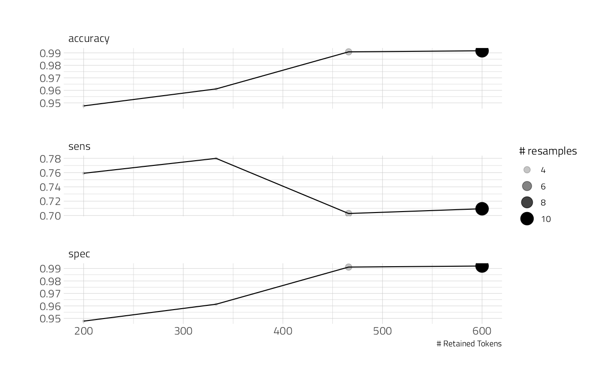
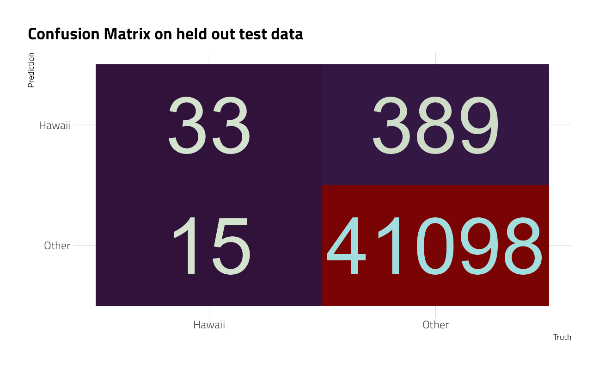

Last updated: 2021-09-14
Checks: 7 0
Knit directory: myTidyTuesday/
This reproducible R Markdown analysis was created with workflowr (version 1.6.2). The Checks tab describes the reproducibility checks that were applied when the results were created. The Past versions tab lists the development history.
Great! Since the R Markdown file has been committed to the Git repository, you know the exact version of the code that produced these results.
Great job! The global environment was empty. Objects defined in the global environment can affect the analysis in your R Markdown file in unknown ways. For reproduciblity it’s best to always run the code in an empty environment.
The command set.seed(20210907) was run prior to running the code in the R Markdown file. Setting a seed ensures that any results that rely on randomness, e.g. subsampling or permutations, are reproducible.
Great job! Recording the operating system, R version, and package versions is critical for reproducibility.
Nice! There were no cached chunks for this analysis, so you can be confident that you successfully produced the results during this run.
Great job! Using relative paths to the files within your workflowr project makes it easier to run your code on other machines.
Great! You are using Git for version control. Tracking code development and connecting the code version to the results is critical for reproducibility.
The results in this page were generated with repository version 26fa702. See the Past versions tab to see a history of the changes made to the R Markdown and HTML files.
Note that you need to be careful to ensure that all relevant files for the analysis have been committed to Git prior to generating the results (you can use wflow_publish or wflow_git_commit). workflowr only checks the R Markdown file, but you know if there are other scripts or data files that it depends on. Below is the status of the Git repository when the results were generated:
Ignored files:
Ignored: .Rhistory
Ignored: .Rproj.user/
Ignored: catboost_info/
Ignored: data/2021-09-08/
Ignored: data/acs_poverty.rds
Ignored: data/fmhpi.rds
Ignored: data/grainstocks.rds
Ignored: data/hike_data.rds
Ignored: data/us_states.rds
Ignored: data/us_states_hexgrid.geojson
Ignored: data/weatherstats_toronto_daily.csv
Untracked files:
Untracked: code/work list batch targets.R
Untracked: figure/
Note that any generated files, e.g. HTML, png, CSS, etc., are not included in this status report because it is ok for generated content to have uncommitted changes.
These are the previous versions of the repository in which changes were made to the R Markdown (analysis/2021_04_13_tidy_tuesday.Rmd) and HTML (docs/2021_04_13_tidy_tuesday.html) files. If you’ve configured a remote Git repository (see ?wflow_git_remote), click on the hyperlinks in the table below to view the files as they were in that past version.
| File | Version | Author | Date | Message |
|---|---|---|---|---|
| Rmd | 26fa702 | opus1993 | 2021-09-14 | standard viridis h color pallete and tune_race_anova |
| html | 5d34b5a | opus1993 | 2021-09-14 | Build site. |
| Rmd | 18f8ff0 | opus1993 | 2021-09-14 | standard viridis h color pallete and tune_race_anova |
Credit to Bob Rudis for sharing the idea of working with this dataset.
The authors of the dataset are:
Blevins, Cameron; Helbock, Richard W., 2021, “US Post Offices”,
suppressPackageStartupMessages({
library(tidyverse)
library(lubridate)
library(hrbrthemes)
library(ggthemes)
library(historydata)
library(gganimate)
library(tidymodels)
library(themis)
library(finetune)
library(textrecipes)
})
source(here::here("code","_common.R"),
verbose = FALSE,
local = knitr::knit_global())
ggplot2::theme_set(theme_jim(base_size = 12))tt <- tidytuesdayR::tt_load("2021-04-13")
Downloading file 1 of 1: `post_offices.csv`post_offices <- tt$post_offices %>%
select(
name,
state,
county1,
established,
discontinued,
latitude,
longitude
) %>%
mutate(
discontinued = case_when(
discontinued == 997 ~ 1997,
discontinued == 18323 ~ 1832,
discontinued == 18903 ~ 1890,
discontinued == 19093 ~ 1909,
discontinued == 19173 ~ 1917,
discontinued == 19223 ~ 1922,
discontinued == 4859 ~ 1859,
TRUE ~ discontinued
),
established = if_else(established < 200,
established * 10,
established
),
state = case_when(
state == "MI/OH" ~ "OH",
state == "VAy" ~ "VA",
TRUE ~ state
)
)post_office_years <- post_offices %>%
select(
name,
state,
established,
discontinued
) %>%
replace_na(list(discontinued = 2003)) %>%
filter(!is.na(established)) %>%
mutate(year = map2(established, discontinued, seq)) %>%
unnest(year)states <- tibble(
state = state.abb,
state.division,
state.area
) %>%
bind_rows(tibble(
state = "DC",
state.division = "South Atlantic",
state.area = 68.3
))
post_office_years %>%
inner_join(states) %>%
count(year,
region = state.division,
name = "n_post_offices"
) %>%
ggplot(aes(year, n_post_offices, fill = region)) +
geom_area() +
scale_y_continuous(
labels = scales::comma,
position = "right"
) +
labs(
y = NULL, x = NULL, fill = NULL,
title = "Number of Active US Post Offices",
caption = "Data: Blevins, Cameron; Helbock, Richard W., 2021"
) +
theme(
legend.position = c(0.1, 0.5),
legend.background = element_rect(color = "white")
)
post_office_years %>%
inner_join(states) %>%
count(year,
region = state.division,
name = "n_post_offices"
) %>%
mutate(region = fct_reorder(region, -n_post_offices, sum)) %>%
ggplot(aes(year, n_post_offices, fill = region)) +
geom_area(show.legend = FALSE) +
geom_label(
data = states %>%
group_by(region = state.division) %>%
summarize(area = sum(state.area)),
aes(
label = paste0(scales::comma(area), " sq. miles"),
x = 1750,
y = 14000
),
fill = "white"
) +
scale_y_continuous(
labels = scales::comma,
position = "right"
) +
facet_wrap(~region) +
labs(
y = NULL, x = NULL, fill = NULL,
title = "Number of Active US Post Offices by Region",
caption = "Data: Blevins, Cameron; Helbock, Richard W., 2021"
)
post_offices %>%
inner_join(states) %>%
filter(!is.na(discontinued)) %>%
count(
region = state.division,
decade = 10 * (discontinued %/% 10),
name = "n_closures"
) %>%
ggplot(aes(decade, -n_closures, fill = region)) +
geom_area(
show.legend = FALSE,
color = "black"
) +
scale_x_continuous(n.breaks = 3) +
facet_wrap(~region) +
labs(title = "US Post Office Closures by Decade")
post_offices %>%
inner_join(states) %>%
count(
region = state.division,
decade = 10 * (established %/% 10),
name = "n_opening"
) %>%
filter(decade < 2000) %>%
ggplot(aes(decade, n_opening, fill = region)) +
geom_area(
show.legend = FALSE,
color = "black"
) +
scale_x_continuous(n.breaks = 3) +
facet_wrap(~region) +
labs(title = "US Post Office Openings by Decade")
post_offices %>%
inner_join(states) %>%
count(
region = state.division,
decade = 10 * (established %/% 10),
name = "n_opening"
) %>%
complete(region, decade, fill = list(n_opening = 0)) %>%
inner_join(
post_offices %>%
inner_join(states) %>%
filter(!is.na(discontinued)) %>%
count(
region = state.division,
decade = 10 * (discontinued %/% 10),
name = "n_closures"
) %>%
complete(region, decade, fill = list(n_closures = 0)),
by = c("region", "decade")
) %>%
group_by(region) %>%
mutate(total = cumsum(n_opening - n_closures)) %>%
ggplot() +
geom_col(aes(decade, n_opening, fill = region),
show.legend = FALSE, color = "black"
) +
geom_col(aes(decade, -n_closures, fill = region),
show.legend = FALSE, color = "black"
) +
geom_line(aes(decade, total),
show.legend = FALSE, color = "black"
) +
scale_x_continuous(n.breaks = 3) +
annotate("label",
x = 1950,
y = 10000,
label = "Net Total"
) +
facet_wrap(~region) +
labs(
title = "US Post Office Openings and Closings by Decade",
y = NULL, x = NULL,
caption = "Data: Blevins, Cameron; Helbock, Richard W., 2021"
)
states_map <- map_data("state") %>%
as_tibble() %>%
mutate(state = state.abb[match(region, str_to_lower(state.name))]) %>%
replace_na(list(state = "DC"))
post_office_years %>%
filter(year == 2000) %>%
count(state, sort = TRUE) %>%
inner_join(
us_state_populations %>%
filter(year == 2000) %>%
mutate(state = state.abb[match(state, state.name)]) %>%
replace_na(list(state = "DC")),
by = "state"
) %>%
mutate(post_office_density = n / (population / 1e6)) %>%
inner_join(states_map) %>%
ggplot(aes(long, lat, group = group, fill = post_office_density)) +
geom_polygon(color = "gray20") +
theme_map() +
labs(
title = "US Post Offices per Million Population in 2000",
fill = NULL
)
I wonder whether the West Virginia post offices were originally shown as addressed in Virginia?
anim <- post_offices %>%
inner_join(states) %>%
count(state,
decade = 10 * (established %/% 10),
name = "n_opening"
) %>%
complete(state, decade, fill = list(n_opening = 0)) %>%
inner_join(
post_offices %>%
inner_join(states) %>%
filter(!is.na(discontinued)) %>%
count(state,
decade = 10 * (discontinued %/% 10),
name = "n_closures"
) %>%
complete(state, decade, fill = list(n_closures = 0)),
by = c("state", "decade")
) %>%
group_by(state) %>%
mutate(total = cumsum(n_opening - n_closures)) %>%
inner_join(
us_state_populations %>%
mutate(state = state.abb[match(state, state.name)]) %>%
replace_na(list(state = "DC")),
by = c("decade" = "year", "state")
) %>%
filter(population > 10000) %>%
right_join(states_map, by = "state") %>%
ggplot(aes(long, lat, group = group, fill = total)) +
geom_polygon(color = "gray20") +
transition_manual(decade) +
theme_map() +
labs(
title = "US Post Offices in { current_frame }",
fill = NULL
)
animate(anim,
end_pause = 60,
width = 1000,
height = 740,
fps = 5
)We will build on Julia Silge’s work posted here
Our modeling goal is to predict whether a post office is in Hawaii, where many names of the post offices are unique.
We can start by loading the tidymodels metapackage, splitting our data into training and testing sets, and creating cross-validation samples.
po_split <- post_offices %>%
mutate(state = case_when(
state == "HI" ~ "Hawaii",
TRUE ~ "Other"
)) %>%
select(name, state) %>%
initial_split(strata = state)
po_train <- training(po_split)
po_test <- testing(po_split)
set.seed(234)
po_folds <- vfold_cv(po_train, strata = state)Next, let’s create our feature engineering recipe. Let’s tokenize using byte pair encoding; this is an algorithm that iteratively merges frequently occurring subword pairs and gets us information in between character-level and word-level.
po_rec <- recipe(state ~ name, data = po_train) %>%
step_tokenize(name,
engine = "tokenizers.bpe",
training_options = list(vocab_size = 500)
) %>%
step_tokenfilter(name, max_tokens = tune()) %>%
step_tf(name) %>%
step_normalize(all_predictors()) %>%
step_smote(state)We also are upsampling this very imbalanced data set via step_smote() from the themis package. The results of this data preprocessing show us the subword features.
Next let’s create a model specification for a linear support vector machine. This is a newer model in parsnip, currently in the development version on GitHub. Linear SVMs are often a good starting choice for text models.
svm_spec <- svm_linear() %>%
set_mode("classification") %>%
set_engine("LiblineaR")Let’s put these together in a workflow.
po_wf <- workflow() %>%
add_recipe(po_rec) %>%
add_model(svm_spec)Let’s explore tuning levels of token filtering between 200 and 600.
po_params <- parameters(po_wf) %>%
update(max_tokens = max_tokens(c(200, 600)))Now let’s fit this workflow (that combines feature engineering with the SVM model) to the resamples we created earlier. The linear SVM model does not support class probabilities, so we need to set a custom metric_set() that only includes metrics for hard class probabilities.
# register a parallel backend, leaving one core available
all_cores <- parallelly::availableCores(omit = 1)
all_coressystem
11 future::plan("multisession", workers = all_cores) # on Windows
po_rs <-
tune_race_anova(
po_wf,
po_folds,
grid = po_params %>% grid_regular(levels = 4),
metrics = metric_set(accuracy, sens, spec),
control = control_race(save_pred = TRUE)
)How did we do?
autoplot(po_rs)
Not too bad, although you can tell we are doing better on one class than the other as we add more model features. Let’s pick the one with the best specificity.
show_best(po_rs, metric = "sens")Next, let’s fit our model on last time to the whole training set at once (rather than resampled data) and evaluate on the testing set. This is the first time we have touched the testing set.
final_wf <- po_wf %>%
finalize_workflow(
select_best(po_rs, metric = "sens")
)
final_fit <- last_fit(
final_wf,
po_split,
metrics = metric_set(accuracy, sens, spec)
)
collect_metrics(final_fit)Our performance on the testing set is about the same as what we found with our resampled data, which is good.
We can explore how the model is doing for both the positive and negative classes with a confusion matrix.
collect_predictions(final_fit) %>%
conf_mat(state, .pred_class) %>%
autoplot() +
labs(title = "Confusion Matrix on held out test data")
This just really emphasizes what an imbalanced problem this is, but we can see how well we are doing for the post offices in Hawaii vs. the rest of the country.
po_fit <- extract_fit_parsnip(final_fit)
liblinear_obj <- po_fit$fit$W
liblinear_df <- tibble(
term = colnames(liblinear_obj),
estimate = liblinear_obj[1, ]
)
liblinear_df %>%
filter(term != "Bias") %>%
group_by(estimate > 0) %>%
slice_max(abs(estimate), n = 15) %>%
ungroup() %>%
mutate(term = str_remove(term, "tf_name_")) %>%
ggplot(aes(estimate, fct_reorder(term, estimate), fill = estimate > 0)) +
geom_col(alpha = 0.6, show.legend = FALSE) +
geom_text(aes(label = term),
hjust = 1
) +
scale_y_discrete(breaks = NULL) +
theme(axis.text.y = element_blank()) +
labs(
x = "Coefficient from linear SVM",
y = NULL,
fill = NULL,
title = "Which subwords in a US Post Office names are used more in Hawaii?",
subtitle = "Subwords like A and _H are the strongest predictors of a post office being in Hawaii"
)Credit to Julia Silge for introducing LiblineaR and tokenizers.bpe, and the predictive workflow shown here.
sessionInfo()R version 4.1.1 (2021-08-10)
Platform: x86_64-w64-mingw32/x64 (64-bit)
Running under: Windows 10 x64 (build 19043)
Matrix products: default
locale:
[1] LC_COLLATE=English_United States.1252
[2] LC_CTYPE=English_United States.1252
[3] LC_MONETARY=English_United States.1252
[4] LC_NUMERIC=C
[5] LC_TIME=English_United States.1252
attached base packages:
[1] stats graphics grDevices utils datasets methods base
other attached packages:
[1] LiblineaR_2.10-12 vctrs_0.3.8 rlang_0.4.11
[4] tokenizers.bpe_0.1.0 textrecipes_0.4.1 finetune_0.1.0
[7] themis_0.1.4 yardstick_0.0.8 workflowsets_0.1.0
[10] workflows_0.2.3 tune_0.1.6 rsample_0.1.0
[13] recipes_0.1.16 parsnip_0.1.7.900 modeldata_0.1.1
[16] infer_1.0.0 dials_0.0.9.9000 scales_1.1.1
[19] broom_0.7.9 tidymodels_0.1.3 gganimate_1.0.7
[22] historydata_0.1 ggthemes_4.2.4 hrbrthemes_0.8.0
[25] lubridate_1.7.10 forcats_0.5.1 stringr_1.4.0
[28] dplyr_1.0.7 purrr_0.3.4 readr_2.0.1
[31] tidyr_1.1.3 tibble_3.1.4 ggplot2_3.3.5
[34] tidyverse_1.3.1 workflowr_1.6.2
loaded via a namespace (and not attached):
[1] utf8_1.2.2 R.utils_2.10.1 tidyselect_1.1.1
[4] lme4_1.1-27.1 grid_4.1.1 pROC_1.18.0
[7] munsell_0.5.0 codetools_0.2-18 ragg_1.1.3
[10] future_1.22.1 gifski_1.4.3-1 withr_2.4.2
[13] colorspace_2.0-2 highr_0.9 knitr_1.34
[16] rstudioapi_0.13 Rttf2pt1_1.3.9 listenv_0.8.0
[19] labeling_0.4.2 git2r_0.28.0 bit64_4.0.5
[22] DiceDesign_1.9 farver_2.1.0 rprojroot_2.0.2
[25] mlr_2.19.0 parallelly_1.28.1 generics_0.1.0
[28] ipred_0.9-11 xfun_0.25 R6_2.5.1
[31] doParallel_1.0.16 lhs_1.1.3 cachem_1.0.6
[34] assertthat_0.2.1 promises_1.2.0.1 vroom_1.5.4
[37] nnet_7.3-16 gtable_0.3.0 globals_0.14.0
[40] timeDate_3043.102 BBmisc_1.11 systemfonts_1.0.2
[43] splines_4.1.1 extrafontdb_1.0 selectr_0.4-2
[46] prismatic_1.0.0 checkmate_2.0.0 yaml_2.2.1
[49] modelr_0.1.8 backports_1.2.1 httpuv_1.6.2
[52] extrafont_0.17 tools_4.1.1 lava_1.6.10
[55] usethis_2.0.1 ellipsis_0.3.2 jquerylib_0.1.4
[58] Rcpp_1.0.7 plyr_1.8.6 progress_1.2.2
[61] parallelMap_1.5.1 prettyunits_1.1.1 rpart_4.1-15
[64] ParamHelpers_1.14 viridis_0.6.1 haven_2.4.3
[67] fs_1.5.0 here_1.0.1 furrr_0.2.3
[70] unbalanced_2.0 magrittr_2.0.1 data.table_1.14.0
[73] reprex_2.0.1 RANN_2.6.1 GPfit_1.0-8
[76] whisker_0.4 ROSE_0.0-4 R.cache_0.15.0
[79] hms_1.1.0 evaluate_0.14 readxl_1.3.1
[82] gridExtra_2.3 compiler_4.1.1 maps_3.3.0
[85] crayon_1.4.1 minqa_1.2.4 R.oo_1.24.0
[88] htmltools_0.5.2 later_1.3.0 tzdb_0.1.2
[91] DBI_1.1.1 tweenr_1.0.2 dbplyr_2.1.1
[94] MASS_7.3-54 boot_1.3-28 Matrix_1.3-4
[97] cli_3.0.1 R.methodsS3_1.8.1 parallel_4.1.1
[100] gower_0.2.2 pkgconfig_2.0.3 xml2_1.3.2
[103] foreach_1.5.1 bslib_0.3.0 hardhat_0.1.6
[106] tidytuesdayR_1.0.1 prodlim_2019.11.13 rvest_1.0.1
[109] digest_0.6.27 rmarkdown_2.10 cellranger_1.1.0
[112] fastmatch_1.1-3 gdtools_0.2.3 curl_4.3.2
[115] nloptr_1.2.2.2 nlme_3.1-152 lifecycle_1.0.0
[118] jsonlite_1.7.2 viridisLite_0.4.0 fansi_0.5.0
[121] pillar_1.6.2 lattice_0.20-44 fastmap_1.1.0
[124] httr_1.4.2 survival_3.2-11 glue_1.4.2
[127] conflicted_1.0.4 FNN_1.1.3 iterators_1.0.13
[130] bit_4.0.4 class_7.3-19 stringi_1.7.4
[133] sass_0.4.0 rematch2_2.1.2 textshaping_0.3.5
[136] styler_1.5.1 future.apply_1.8.1